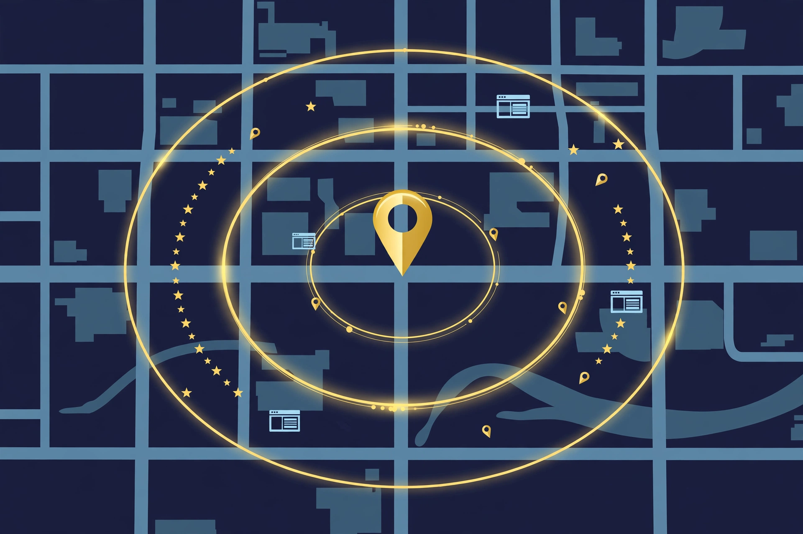

Ask a room of local business owners why Google Maps doesn't show them, and you'll hear the same sentence in different words: "I did everything and nothing moved." Usually, they really did work hard. They filled the profile, posted photos, asked for reviews, fixed the website. The effort wasn't the problem. The diagnosis was. Three different problems produce the exact same symptom — nobody finds you — and a fix that cures one does nothing for the other two.
Three problems, one symptom
Google's own documentation reduces local ranking to three factors: relevance (how well a profile matches the search), distance (how far the business is from the searcher), and prominence (how well known and trusted the business appears to be). The three invisibility problems map onto how those factors fail in practice — and each one announces itself differently, if you know what to look at.
| WHAT YOU SEE | YOUR PROBLEM | FIRST FIX |
|---|---|---|
| Calls near your base, silence a few miles out | Geographic | Build area evidence |
| Complete profile, but wrong searches — or no searches at all | Category | One primary drawer |
| You used to rank and vanished — or you're new and barely shown | Authority | Build customer proof |
Run the symptom check first. It takes minutes, and it decides everything that follows — because months spent fixing the wrong problem is the most expensive outcome in local search.
1Geographic: Google doesn't trust your reach
The pattern is distinctive. The phone rings from customers close to the business — the same street, the same neighbourhood. A few miles further out, silence. Not fewer calls. None. A garage door company can be busy on its own doorstep and completely invisible five to ten miles away. An HVAC contractor can hold the number one spot on his own street and not exist two miles north.
Nothing here is broken. Google knows the business exists and roughly where it sits. What it lacks is evidence — enough proof that this business genuinely serves the wider area to recommend it there with confidence. Distance is one of Google's three named factors, and research firm Whitespark's annual Local Search Ranking Factors survey places proximity at the top of the local-pack factors, at roughly 55% of what decides the results. Google will not spend that weight on a business whose evidence stops at its own street.
"Local" is also not one fixed radius. It is whatever distance customers of that trade normally travel: a garage door repair might draw from about three miles, while an HVAC engineer is routinely hired from fifteen. Google models this per industry. The business doesn't choose its radius — it earns the right to be considered inside it.

The fix is therefore not a setting but a body of proof, built over time. Directory citations that mention the areas served. Website pages written about the specific towns and neighbourhoods covered. Reviews in which customers naturally name where they live. Posts that reference real jobs in real places. Each one tells Google the same sentence — this business serves this area, and real customers there vouch for it — and the trusted radius grows as the sentence repeats.
2Category: Google doesn't know what you are
The second problem is quieter, because everything looks healthy. The profile is 100% complete. Photos, reviews, hours — all present. Yet the business surfaces for the wrong searches, or for none. The cause is classification. Think of Google as a filing cabinet: every profile must go into one drawer before it can be retrieved. When the signals disagree about which drawer, Google doesn't guess. It leaves the profile on the desk.
This fails in two ways. The first is too many services fighting for the same drawer — an installer who fits CCTV cameras, alarm systems, and video-conferencing rigs is three businesses aimed at three different customers, and the profile reads as none of them clearly. Google files it somewhere vague, where no ideal customer is looking. The second failure is the wrong drawer entirely: the primary category names one service while the profitable work — and the whole website — is about another. Category and website point at different drawers, so the profile is filed confidently under neither.
The primary category carries this much weight because it is the strongest classification signal a profile sends: Whitespark's ranking-factors research puts the correct primary category at the very top of the relevance actions an owner controls. Which makes the fix a decision, not a task. You only get one primary drawer. Choose it with a single question: if Google sent you ten customers tomorrow, all searching for one of your services, which service would make the biggest difference to your business? That service becomes the primary category. Secondary categories, the services list, and the website's pages then arrange themselves behind it, supporting one clear identity instead of arguing about three.
3Authority: Google doesn't trust you — yet, or anymore
The third problem is the hardest, not because it is complicated but because it has no shortcut. It is a deficit in Google's third factor, prominence — the accumulated proof that a business is known and trusted. And it arrives by two opposite roads.
The first road is trust lost. A profile can hold the first page of the map for years — seven years of visibility, seven years of calls — and then lose its listing to a profile problem. Even after a long fight for reinstatement, the business can return to find everything gone: competitors occupying its keywords, its history no longer counting, Google treating it as a stranger. The second road is trust never built: a brand-new business with a flawless profile — categories right, website right, everything complete — that Google still barely shows, for the simple reason that no history and no customer signals exist yet. Nothing is wrong. Nothing has been proven, either.
Both roads lead to the same repair, and it runs through customers, not settings. Find out why customers actually chose the business — ask them, and capture the answer in their own words. Then make it easy for those words to become public proof: reviews that describe the real work, photos of real jobs taken by real customers, posts that show the business operating in its area. Prominence, in Google's own description, is partly built from exactly this material — the reviews a business has and the information about it across the web. Real customers, real words, real photos, accumulated steadily: that is the whole method, and there is no faster legitimate one.
The diagnosis, as a checklist
| STEP | DO THIS | THE HONEST CHECK |
|---|---|---|
| 1 | Match your symptom to the table above | One problem, named — before touching anything |
| 2 | Geographic → build area evidence over time | Citations, pages, reviews and posts naming your areas |
| 3 | Category → one primary drawer, chosen by profit | Website and profile tell the same one story |
| 4 | Authority → build customer proof, steadily | Real words and photos; no bursts, no shortcuts |
Diagnose first.The wrong fix wastes months.Find the right hole. Fix the hole. Then grow.
Sources
The research claims in this breakdown come from named sources:
- Google Business Profile Help — Tips to improve your local ranking on Google — local results are based mainly on relevance, distance, and prominence; prominence is informed by reviews and information about the business across the web.
- Whitespark — Local Search Ranking Factors (annual expert survey) — proximity is the largest single local-pack factor, estimated around 55%; the correct primary category is the top-ranked relevance action an owner controls.
A note on what's real
This is a diagnostic framework — a way to name the problem before spending money or months on the wrong repair. The three problems overlap in real life, and the fixes borrow from the same toolbox as any honest local-SEO work: no timeline promises, no ranking guarantees, no tricks. What the framework changes is the order of operations: diagnosis first, because a month of correct work on the right problem beats a year of hard work on the wrong one.